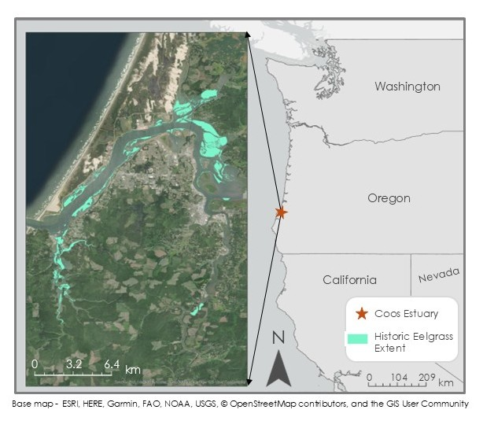
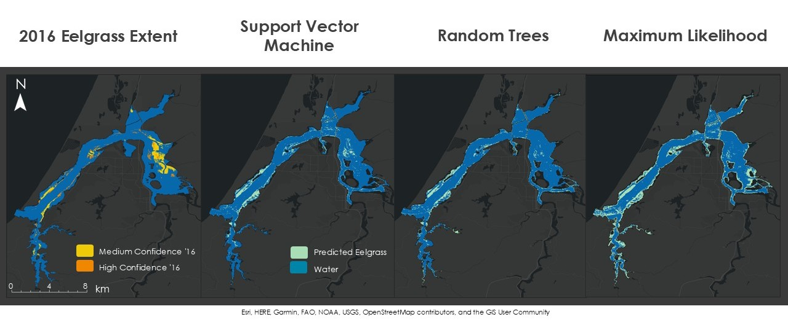
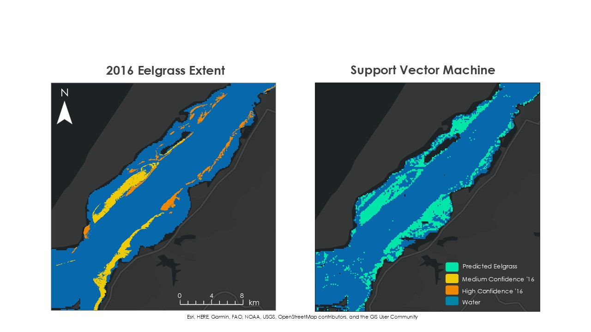

South Slough Water Resources
Monitoring Changes in Water Quality to Identify Stressors in Eelgrass Extent Throughout the Coos Estuary
Overview: In Oregon's Coos Estuary, the extent of eelgrass (Zostera marina) meadows has decreased substantially since 2005. To address this concern, we partnered with the South Slough National Estuarine Research Reserve (SSNERR) and the Confederated Tribes of the Coos, Lower Umpqua, and Siuslaw Indians (CTCLUSI) to investigate eelgrass presence, external conditions that may affect eelgrass populations, and test the feasibility of using satellite remote sensing in the Coos Estuary region. We leveraged multispectral satellite imagery, historic aerial data, and machine learning classification techniques to explore eelgrass and water quality between 2016 and 2023. We found that remote sensing techniques are viable for visualizing broad water quality trends, but feasibility of remotely sensing eelgrass within the estuary is limited and may be improved by coupling satellite measurements with updated in situ or aerial data.
Methods: We used optical data from Landsat 8 OLI, Landsat 9 OLI-2, and Sentinel-2 MSI, and briefly explored sea surface temperature from MODIS; however, the spatial resolution was too large for our study area. Using Google Earth Engine (GEE), we extracted water quality parameters and relevant indices, like the Normalized Difference Aquatic Vegetation Index (NDAVI), to build a comprehensive picture of eelgrass status and environmental conditions. We also conducted a comparison of machine learning algorithms (random forest, support vector machine, and maximum likelihood) to determine which model was the most suitable for our goal of identifying eelgrass in our study area. We used Python, R, and ArcGIS Pro to visualize and interpret our results.
Results: Our machine learning classifications revealed that eelgrass identification is inconsistent across algorithms, but support vector machine (SVM) produced the greatest accuracy. Looking further, we found that our SVM model overestimated certain areas of the estuary, adding extra eelgrass pixels, while in other locations it severely underestimated the number of eelgrass pixels.
Tools Used: Google Earth Engine, R, Python, ArcGIS Pro
Keywords: Remote Sensing, Machine Learning, Submerged Aquatic Vegetation, Water Quality, Eelgrass
Project Contributors: Maya Hall (project lead), Sean McCollum (team member), Zoë Siman-Tov (team member), and Gabriel Halaweh (team member)
Check out some of our project deliverables: